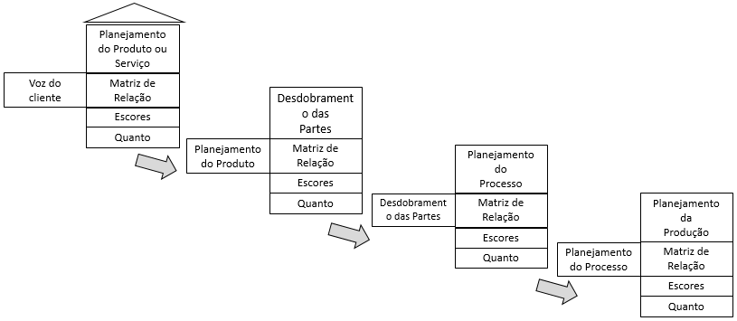

Gestão da Qualidade
Last updated: 18 novembro, 2020
Instrumentos de aprendizagem na disciplina
Esta disciplina será estruturada conforme unidades de ensino e com periodicidade em ciclos semanais. Propõe-se, com foco nos objetivos de aprendizagem centrados no estudante, as componentes apresentadas na Tabela 2.
Tabela 2: Estrutura Semanal da disciplina
| Componente | Meio | Objetivo |
|---|---|---|
| Material e conteúdo diversificado | Vídeos, textos, quizzes, tutoriais | Orientar estudantes na construção de conhecimento teórico e reflexão sobre conceitos, princípios e técnicas |
| Checkpoints - Situações-problema e atividades de verificação | Vídeos, textos, quizzes, tutoriais | Foco na aprendizagem baseada em problemas |
| Tarefas preliminares (sala de aula invertida) | Vídeos, textos, quizzes, tutoriais | Instrumentos de provocação e reflexão quanto aos componentes da disciplina que serão discutidos nos encontros síncronos. Foco na capacidade de discussão, argumentação, interação e colaboração. |
| Encontros síncronos com o professor-tutor | Plataforma com link para reunião | Alinhamento de conceitos, princípios e técnicas, de forma sistemática, às propostas iniciais previstas na estrutura curricular da disciplina. |
Encargos da disciplina
Os alunos deverão entregar 02 atividades semanais e participar dos momentos síncronos. O registro da frequência será realizada por meio da entrega das atividades semanais. Caso o aluno opte por não participar dos encontros síncronos, bastará a entrega das atividades semanais. Entretanto, caso os alunos não realizem a entrega de alguma das atividades, o registro da frequência será realizado pela sua presença no momento síncrono.
Instrumentos de avaliação
A proposta avaliativa para esta disciplina é fundamentada nos objetivos de aprendizagem de cada componente. Assim, as atividades, bem como pontuação, foram distribuídos por semanas. Toda semana será pontuada, não sendo necessário provas ao longo da disciplina. Semanalmente, os alunos terão 02 atividades: os CHECKPOINTS e as TAREFAS PRELIMINARES. Os checkpoints serão momentos de verificação do conteúdo assimilado pelo aluno na semana, podendo ser apresentados na forma de fóruns, quizzes ou situações-problema. Já as TAREFAS PRELIMINARES são atividades preliminares que farão o aluno perceber o conteúdo que será ministrado na semana que ainda não se iniciou. Essas tarefas podem ser a gravação de um pequeno vídeo, uma foto, participação em fóruns, etc. A carga de trabalho está estruturada para fomentar a proposta de aprendizagem centrada no estudante. Em todas as atividades semanais, foram propostas rubricas (critérios) de avaliação para as atividades estruturadas.
| Atividades | Quantidade | Pontos unitários | Pontos totais |
|---|---|---|---|
| Tarefas preliminares | 14 | 2 | 28 |
| Checkpoints-padrão | 9 | 4 | 36 |
| Checkpoints alternativos | 6 | 6 | 36 |
Condições para aprovação no curso
Para serem aprovados, cada aluno deve ter, no mínimo:
75% de cumprimento da carga horária da disciplina, e 60 pontos
Conteúdo Semanal
Semana 1: 4a Revolução industrial e competências do século XXI
Documentação
Aprendizagem baseada em problemas
Contextualização - 4a revolução industrial e as competências do profissional no século XXI
Checkpoint
PRAZO PARA SUBMISSÃO: 22/08/2020
Discussão: Como você se enxerga no mercado de trabalho do século XXI?
Instruções:
Assista os vídeos.
Faça uma revisão dos conteúdos desta unidade.
Realize o teste de múltiplas inteligências(Links para um site externo.) neste link.
Faça uma reflexão sobre as demandas do mercado de trabalho e o quanto você pode contribuir com sua formação. Responda uma das questões a seguir (200-500 palavras, 2-4 parágrafos).
- O que você pode fazer para contribuir para sua formação no contexto do século XXI?
- Quais são suas inteligências mais predominantes e como elas se relacionam com as competências para o século XXI?
- Poste sua resposta no Fórum - Checkpoint 1 - Canvas
Tarefa preliminar
PRAZO PARA SUBMISSÃO: 25/08/2020
Discussão: Sistema input-output
Instruções:
Faça um pequeno vídeo (30 segundos a 1 minuto) registrando um processo de transformação.
Explique qual é o processo que está sendo registrado no vídeo, enfatizando as suas entradas e as saídas.
Poste sua resposta no Fórum 1 - Tarefa preliminar 1.
Semana 2: Modelo input-output
Documentação
Os vídeos desta semana estão no Canvas. A temática central é a modelagem de processos de transformação por meio de modelos INPUT-OUTPUT. Alguns termos-chave foram explorados no momento síncrono, a saber:
+ modelos
+ eficiência, eficácia e efetividade
+ produtividade
+ complexidade
+ escopo e limitação do sistema
+ foco no processo + foco no cliente
Tarefa preliminar
PRAZO PARA SUBMISSÃO: 01/09/2020
Discussão: Você acha que a empresa do filme tem Qualidade?
Instruções:
Assista o vídeo
Faça uma revisão dos conteúdos desta unidade.
Faça uma reflexão sobre o conceito de qualidade e responda duas ou mais questões dentre as questões a seguir (200-500 palavras, 2-4 parágrafos).
- Analisando a empresa de fast-food que atende ao cliente do filme, ela tem qualidade?
- Qualidade é ter um padrão de atendimento?
- Qualidade é ter uma norma a ser seguida?
- Qualidade é atender as necessidade do Cliente?
- É ter um produto melhor do que o concorrente em termos de características?
- É ter uma boa relação Custo x Benefício?
- Poste sua resposta no Fórum - Tarefa Preliminar 1
Conteúdo da página
Estrutura da disciplina
Conteúdo semanal
Início
Semana 3: Evolução do conceito de qualidade
Documentação
Nesta semana foram discutidas as perspectivas históricas e fundamentos da Gestão da Qualidade.
Semana 4: O que é qualidade?
Documentação
Filosofia - qualidade Um pouco de história e filosofia…..
Qualidade (do Latim qualitas) é um atributo ou uma propriedade. Os atributos são imputáveis por um sujeito enquanto as propriedades são inerentes. Na filosofia contemporânea, a ideia de qualidade e especialmente como distinguir certos tipos de qualidade de outros permanece controversa.
Qualidade é uma noção que foi desenvolvida por Platão no contexto de sua Teoria das Formas, em que elaborou níveis de atributos e suas relações participantes nas Ideias. Aristóteles analisou qualidades em seu livro Categorias, trabalho lógico em que incluiu-a como uma das dez categorias.
John Locke apresentou uma distinção entre qualidades primárias e secundárias em Um Ensaio acerca do Entendimento Humano. Para Locke, uma qualidade é uma ideia de uma sensação ou percepção. Locke afirma ainda que as qualidades podem ser divididas em dois tipos: qualidades primárias e secundárias. As qualidades primárias são intrínsecas a um objeto - uma coisa ou uma pessoa - enquanto as qualidades secundárias dependem da interpretação do modo subjetivo e do contexto da aparência.
De forma sintética e contemporânea, o conceito de qualidade pode ser definido assim:
Qualidade é o grau de utilidade esperado ou adquirido de qualquer coisa, verificável através da forma e dos elementos constitutivos do mesmo e pelo resultado do seu uso. A palavra “qualidade” tem um conceito subjetivo que está relacionada com as percepções, necessidades e resultados em cada indivíduo. Diversos fatores, como a cultura, modelos mentais, tipo e produto ou serviço prestado, necessidades e expectativas influenciam diretamente a percepção da qualidade.
Semana 5: Normalização e Normas ISO
Documentação
Certificação As empresas não são certificadas, e sim os processos.
A primeira etapa para certificação é a definição do escopo para apropriação de certificação.
Obras são interessantes exemplos de processos que poderiam ser padronizados por sua repetitividade, mas que, devido à intensividade do uso de mão-de-obra e, usualmente, trata-se de uma mão-de-obra pouco qualificada.
Se o processo não está orientado à padronização, não se justifica
Coca-cola não tem ISO. Coca-cola tem o sistema de qualidade dela mesma - Kore. Ferramenta de governança e gestão por meio da qual ela consegue avaliar o desempenho. Incorpora ISO 9000, ISO 14000 e outras certificações.
A própria empresa audita e o mercado é o próprio mercado audita.
Década de 80, a indústria automobilística.
a série ISO 9000 é de certificação de processos e gestão. É uma série de 1987 e é modificada em 1994, 2000, 2008 e 2015.
Histórico 1987 - Criação da série ISO 9000 com foco em padronização 1994 - o foco é orientado aos requisitos da norma 2000 - foco no cliente externo 2008 - requisitos. 2015 - flexibilização de requisitos.
a série ISO 14000 é a série de gestão ambiental.
Norma antiga não tinha preocupação com a qualidade e sim com padronização dos processos. Norma não refletia envolvimento de stakeholders e não deixava claro o comprometimento da alta administração com a qualidade. Era uma norma de 2000, com versão atualizada em 2008 e que em 2015 foi atualizada.
Padronização - estabelecer regra de forma que todo mundo desenvolva os processos da mesma maneira.
Ter certificação para ganhar credibilidade no mercado.
No Brasil, temos cerca de 25.000 empresas certificadas na norma ISO.
Termo da ISO para falar que um procedimento está correto ou não é conformidade ou não conformidade.
Há produtos brasileiros da Tramontina que precisam de certificação e precisam finalizar a produção para sair de Portugal made in Portugal.
Quem financia - governo exige - FINAME - cliente exige pelas demandas acessórias.
Pontos de atenção.
Quando a modificação da norma foi alterada em 2015, o prazo para mudança era setembro 2018 para readequação. 90% não tinham pedido. Ou aprendi e não preciso de certificação ou não consigo adequar. Norma nova exige informação documentada e não mais procedimentos. Por outro lado, se discutimos indústria 4.0, integração de processos com cliente em tempo real, os procedimentos têm que ser o mais padronizados possíveis. Linha de produção. Para projetos, por exemplo, pode haver uma diferenciação em função do cliente e do escopo do projeto.
A norma ISO vale por 3 anos.
CEP - os gráficos falam que vai dar errado antes de acontecer.
No Brasil, a série ISO 9000 foi recepcionada pela ABNT, mas não há obrigatoriedade
Normas servem para padronização de processos e do nosso funcionamento como sociedade.
O organismo de creditação é aquele que fala que a empresa está de acordo com a norma. Quando as auditorias internas estão com um nível de maturidade adequado, é possível agendar a visita para certificação.
Certificação da norma nova é Bureau Veritas - empresa de creditação.
A norma mudou para independência da certificação. E para envolvimento da gestão risco e meta. Incorpora partes interessada, compatibiliza com outras normas de gestão e gestão pública, o número de exigência documental é reduzido. Não há exigência de manual de qualidade documentado com troca de documento controlada. Foi implantado também um sistema de gestão de risco.
Pela primeira vez, em 2015, a norma ISO 9001 incorporou a gestão.
Liderança fica no meio, mas o pano de fundo é o processo. Todas as referências baseadas em evidências. Processo de tomada de decisão em evidências.
Outros documentos
Semana 6: Kaizen, PDCA, MASP
Documentação
Kaizen foi traduzido como Melhoria Contínua para o mundo ocidental.
Mas, é mais que isso.
Kaizen é a insatisfação com o “status quo”. É a melhoria de todo dia. Vejam o que ensina o Prof. Imai.
Para entendimento do processo de melhoria, duas questões devem ser respondidas:
-
Por que é necessário fazer essa melhoria?
-
Para quem será feita essa melhoria?
Assim, algumas estratégias e respectivos fundamentos podem ser pensados para implementação do processo de melhoria, a saber:
-
5S: estrutura - ambiente de trabalho, procedimentos e instruções, anormalidades visíveis
-
Kaizen: visão geral - gestão por KPIs, controle do trabalho em processamento, cultura de melhoria contínua
-
Lean: estabilidade - processos estáveis, eliminação de desperdícios, fluxo
-
Six Sigma: capacidade - redução da variabilidade, controle dos processos, ferramentas estatísticas
-
DFSS (Design for Six Sigma): Robustez - planejamento para o seis sigma, QFD


A palavra “Kaizen” tem sua origem no idioma japonês e significa “melhoria” e refere-se a filosofia ou práticas que incidem sobre a melhoria contínua dos processos de manufatura, engenharia, gestão de negócios ou qualquer processo como até mesmo na área da saúde, governos, bancos e outras indústrias. Ao melhorar as atividades e processos padronizados, kaizen tem como objetivo eliminar o desperdício (ver manufatura enxuta).
O Kaizen tem origem no Japão (Kaizen: The Key to Japan’s Competitive Success em 1986, de Masaaki Imai). Ele se baseia em uma série de princípios:
-
eliminação de desperdícios.
-
orientação à processos.
-
dados e fatos.
-
atenção deve estar no local onde o valor é criado.
-
trabalho em equipe.
-
realizar ações para conter e corrigir as causas bases dos problemas.
Por quê promover a melhoria contínua?
Para atender aos requisitos da normalização, ou para atingir os objetivos do kaizen, como:
-
melhoria na qualidade;
-
redução de custos;
-
aumento na satisfação do cliente;
-
mais segurança;
-
redução de desperdício na empresa;
-
aumento de produtividade;
-
compartilhamento do conhecimento;
-
maior confiabilidade das máquinas/equipamentos.
Caracterizando os métodos
No quadro a seguir são apresentados os métodos mais difundidos de solução de problemas e melhoria contínua. De maneira sintética, os métodos são desdobramento do ciclo de Deming.
A ideia é promover a análise de problemas considerando o método científico, de maneira organizada e efetiva.
31b8e172-b470-440e-83d8-e6b185028602::31b8e172-b470-440e-83d8-e6b185028602
PDCA: Também conhecido como ciclo de Deming ou Shewhart, o método PDCA busca a melhoria contínua de produtos e processos, identificando as possíveis causas de seus problemas e implementando soluções.
MASP: É uma abreviatura usada para o Método de Análise e Soluções de Problemas é a denominação que o QC-Story. Trata-se de um roteiro para manter, controlar e aperfeiçoar a qualidade de produtos e processos passando pela verificação do resultado da solução e, finalmente, geração e disseminação de aprendizado decorrido de sua aplicação.
8D: A metodologia das oito disciplinas foi melhorada pela Ford Motor Company nos anos 80, visando a identificação, correção e eliminação da repetição de problemas de produtos e processos.
A3: Método desenvolvido pela Toyota Motor Corporation que estabelece uma estrutura para propor soluções para os problemas, fornecer relatórios da situação de projetos em andamento e relatar as atividades de coleta de informações.
DMAIC: Metodologia para redução de defeitos do programa Seis Sigma, o DMAIC é um ciclo de desenvolvimento, caracterizado pela utilização intensiva de técnicas estatísticas, utilizado em projetos de aumento de produtividade, redução de custos, melhoria de processos administrativos, dentre outras aplicações.
FTA: Método da Análise da Árvore de Falhas, traduzido do inglês “Fault Tree Analysis – FTA” foi desenvolvido por volta de 1960, por W.A. Watson, da empresa Bell Laboratories e aperfeiçoada pela Boeing Corporation. Sua metodologia é dedutiva e estruturada em termos de eventos, ao invés de componentes, que tem por objetivo melhorar a confiabilidade em geral de produtos e de processos por meio da relação lógica entre falhas primárias e falha final do produto buscando assim a resolução de problemas.
RCA: A Análise de Causa Raiz (ACR) ou traduzido do inglês “Root Cause Analysis – RCA” é um método para o uso investigativo na identificação da causa raiz de um evento, o qual pode ser com segurança, saúde, meio ambiente, qualidade e impactos na produção.

Fontes:https://www.gradusct.com.br/masp/, https://www.telios.eng.br/
MASP e PDCA


Semanas 7, 8 e 9: Ferramentas da qualidade
Documentação
- Folha de verificação
- Estratificação
- Gráfico de Pareto
- Diagrama de causa e efeito
- Histograma
- Fluxograma
- Diagrama de dispersão
- Gráficos de controle
- O ciclo PDCA
- Brainstorming
- 5S
- 5W
- 5W2H

Ferramentas da qualidade e o uso do R
Várias empresas estão usando R como software analítico. Por ser uma plataforma FOSS, tem uma comunidade ampla de colaboração.
Para saber um pouco mais, consulte Utilização do R para Controle da Qualidade por Adriano Puglia
O Adriano Puglia foi gentil e compartilhou seu conhecimento sobre como implementar no R as ferramentas de qualidade. Vou fazer uma síntese aqui, mas sua página, com maior detalhamento, pode ser acessada em R e as ferramentas da qualidade.
Como o R é baseado em pacotes que incluem funções para diferentes implementações, precisaremos de um package para gerar as ferramentas de qualidade com mais facilidade. Existem diferentes packages, mas seguiremos um único tutorial para facilitar a nossa vida. Para tanto, utilizaremos os pacotes qcc e SixSigma, ambos disponíveis no CRAN para download e instalação.
Começaremos pela construção de diagramas de causa e efeito (pacote qcc)
Precisamos instalar o package e chamar sua biblioteca por meio dos comandos a seguir.
# install.packages("qcc") #Instalando o pacote
library(qcc) #Carregando o pacote para uso das funções. Existe uma função específica para geração do diagrama de Ishikawa por meio desse pacote, denominada cause.and.effect. Precisamos estruturar a informação para que possa ser carregada na estrutura do diagrama. Assim:
cause.and.effect(cause=list(Medidas=c("Micrometers", "Microscopes", "Inspectors"),
Materiais=c("Alloys", "Lubricants", "Suppliers"),
Pessoal=c("Shifts", "Supervisors", "Training", "Operators"),
Ambiente=c("Condensation", "Moisture"),
Métodos=c("Brake", "Engager", "Angle"),
Máquinas=c("Speed", "Lathes", "Bits", "Sockets")),
effect="Falhas na superfície")Lembrando que informações sobre a parametrização das funções pode ser encontrada no help e que as informações sobre o processo são compostas por objetos que combinam (função c()) valores em cada ramo das dimensões das possíveis causas primárias (Métodos, Máquinas, Mão de Obra, Material, Medidas, Meio Ambiente).
Folha de verificação
O tipo mais simples de folha de verificação é a folha de registro, por meio da qual são registradas marcas cada vez que o evento ocorre. A coleta desse tipo de informação, estratificada conforme fatores operacionais (turno de trabalho, tipo de ocorrência, responsável, dentre outros) pode ser realizada tanto com o objetivo de entender o processo em um primeiro momento como depois de algumas explorações dos eventos por meio de outras ferramentas da qualidade, como pareto, histogramas e o diagrama de causa e efeito.
folha_verificacao <- rbind(data.frame(group="Métodos", cause= c("recepção de materia prima", "Método de transporte")),
data.frame(group="Máquinas", cause="compressor"),
data.frame(group="Mão_de_obra", cause="recepcionista"),
data.frame(group="Material", cause="fornecedor"),
data.frame(group="Medidas", cause="método de medição"),
data.frame(group="Meio_ambiente", cause="ventilação"))
folha_verificacao$Inspetor_A <- NA
folha_verificacao$Inspetor_B <- NA
folha_verificacao$Inspetor_C <- NAAs causas levantadas agora serão investigadas por uma equipe contendo 3 inspetores. Inspetor A, Inspetor B e Inspetor C. Durante a semana nos horário de intensa produção os inspetores coletaram as seguintes informações:
folha_verificacao$Inspetor_A <- c(0, 0, 4, 3, 2, 0, 2)
folha_verificacao$Inspetor_B <- c(0, 0, 5, 3, 2, 0, 2)
folha_verificacao$Inspetor_C <- c(0, 0, 6, 4, 3, 0, 2)
folha_verificacao$total <- folha_verificacao$Inspetor_A +
folha_verificacao$Inspetor_B +
folha_verificacao$Inspetor_C
folha_verificacao## group cause Inspetor_A Inspetor_B Inspetor_C
## 1 Métodos recepção de materia prima 0 0 0
## 2 Métodos Método de transporte 0 0 0
## 3 Máquinas compressor 4 5 6
## 4 Mão_de_obra recepcionista 3 3 4
## 5 Material fornecedor 2 2 3
## 6 Medidas método de medição 0 0 0
## 7 Meio_ambiente ventilação 2 2 2
## total
## 1 0
## 2 0
## 3 15
## 4 10
## 5 7
## 6 0
## 7 6Estatísticas descritivas básicas:
## metodos_recepcao_materia_prima metodos_transporte
## Inspetor_A 0 0
## Inspetor_B 0 0
## Inspetor_C 0 0
## total 0 0
## maquinas_compressor maodeobra_recepcionista material_fornecedor
## Inspetor_A 4 3 2
## Inspetor_B 5 3 2
## Inspetor_C 6 4 3
## total 15 10 7
## medidas_metodo meio_ambiente_ventilacao
## Inspetor_A 0 2
## Inspetor_B 0 2
## Inspetor_C 0 2
## total 0 6## Min. 1st Qu. Median Mean 3rd Qu. Max.
## 0 0 0 0 0 0## Min. 1st Qu. Median Mean 3rd Qu. Max.
## 0 0 0 0 0 0## Min. 1st Qu. Median Mean 3rd Qu. Max.
## 4.00 4.75 5.50 7.50 8.25 15.00## Min. 1st Qu. Median Mean 3rd Qu. Max.
## 3.0 3.0 3.5 5.0 5.5 10.0## Min. 1st Qu. Median Mean 3rd Qu. Max.
## 2.0 2.0 2.5 3.5 4.0 7.0## Min. 1st Qu. Median Mean 3rd Qu. Max.
## 0 0 0 0 0 0## Min. 1st Qu. Median Mean 3rd Qu. Max.
## 2 2 2 3 3 6Pareto
Os diagramas de causa e efeito e os dados das folhas de verificação são geralmente representados usando gráficos de Pareto. Esses tipos de gráficos plotam barras classificadas (da barra mais alta à barra mais curta) representando a variável medida, nesse caso, as contagens de causas plausíveis de um efeito.
Vamos utilizar a função pareto.chart do pacote qcc.
library(qcc)
Par_Causas_Pri <- (folha_verificacao$Inspetor_A)
names(Par_Causas_Pri) <- folha_verificacao$group
G_Par_Causas_Pri <- pareto.chart(Par_Causas_Pri)Checkpoint
PRAZO PARA SUBMISSÃO: 17/10/2020
Tarefa preliminar
Não houve tarefa preliminar essa semana
Semana 10: Ferramentas da qualidade - atividade complementar
Checkpoint
PRAZO PARA SUBMISSÃO: 27/10/2020 Link
Semana 11: Quality Function Deployment (QFD)
Documentação
Objetivo: traduzir para termos técnicos a demanda do cliente
QFD é uma ferramenta de tradução da voz do cliente em expressões técnicas para engenharia desenvolver processos
Empresa tradicional - Entregar o que o cliente precisa
- Empresa define o que deve ser feito
- 80% satisfação
QFD - pesquisa de mercado
- desdobramento em departamentos
- 90/95% de satisfação


A casa da qualidade - House of Quality
Esquerdo - voz do cliente
Superior - tradução - especificações técnicas
Direita - avaliação competitiva - benchmarking
Inferior - Quanto - para cada especificação do projeto
Matrizes

- Matriz do planejamento do produto - características e desdobramentos
- Matriz de componentes críticos para execução
- Planejamento dos processos, relacionando-os às características principais dos produtos e dos componentes
- Planejamento da fabricação - parâmetros para controle de produtos e processos.
Estrutura de desdobramento da função da qualidade nas 4 matrizes
Para cada matriz, existe o envolvimento de novas áreas da organização - Clientes, marketing e vendas
- Produto
- Engenharia de processo
- Engenharia de manufatura
Olhar sistêmico e alinhamento de diversas áreas das organizações, antecipando problemas na produção ou nas mãos dos clientes
As 4 casas da qualidade do QFD permitem integração entre clientes, P&D&I, desenvolvimento de produto e manufatura.
Conceitos gerais…
- Escala Likert na avaliação competitiva
- Dificuldades organizacionais: limitações e processos sem investimento em capacidade
- Correlação: relações entre as expressões técnicas
- Avaliação competitiva: comparação com concorrentes
- Importância absoluta e relativa: grau de importância.
- Escala Likert na avaliação competitiva
Exemplo: cliente no supermercado
Matriz 1 - Planejamento: Desejos e necessidades dos clientes
Matriz 2 - Componentes: corredores, setores e gôndolas
Matriz 3 - Planejamento de processo: abastecimento, manuseio de mercadorias
Matriz 4 - Planejamento da produção: detalhar fluxo de processos e observar o que controlar em relação ao processo (parâmetros) e produtos (características) gerenciamento por processos.
Checkpoint
PRAZO PARA SUBMISSÃO: 03/11/2020 Link
Semana 13: Controle Estatístico de Processos (CEP)
Documentação
Controle estatístico de processos


Variações e o CEP

Controle estatístico de processos
Os princípios do CEP fundamentam-se em:
- pensar e decidir com base em fatos
- pensar separando a causa do efeito
- compreender a variabilidade do sistema de produção
- usar raciocínio de prioridade (Pareto)
- utilizar re forma permanente os ciclos de controle e melhoria de processos
- definir o próximo processo ou etapa como cliente da anterior e o cliente deve determinar a qualidade esperada
- identificar, por vezes de maneira antecipada, os focos e locais onde problemas estão ocorrendo
- educar, treinar e organizar a mão de obra para administração participativa e autocontrole dos processos
Técnicas de apoio - Amostragem - Folha de verificação - Histograma - Gráficos sequenciais - Diagrama de Pareto - Diagrama de causa e efeito - Estratificação - Gráficos de controle (ou cartas de controle ou Gráficos de Shewhart) - Diagrama de correlação
Variações e o CEP Variação total = variação aleatória + variação controlável
O Controle Estatístico de Processos (CEP) caracteriza-se por: - redução da variabilidade em medidas; - exatidão em alcançar metas!
Ações sobre o processo
Mudanças nas operações
- Treinamento para os operadores;
- Mudanças nos materiais que entram
Mudanças nos elementos mais básicos do processo - Equipamento; - A comunicação entre as pessoas; - O projeto do processo como um todo - que pode estar vulnerável às mudanças de temperatura ou umidade.
Ciclo da metodologia científica aplicado ao CEP 1. identificação da problemática e o planejamento de experimentos com a escolha adequada dos instrumentos de análise 2. experimentação 3. análise de dados 4. reação dos gestores para melhoria do processo
Gráficos de controle
Principais objetivos de gráficos de controle: 1. Estimar os parâmetros do processo no cenário de controle estatístico, permitindo analisar sua capacidade; 2. Monitorar parâmetros da produção ao longo do tempo; 3. Sinalizar a ocorrência de causas de variação atribuíveis; 4. Reduzir a variabilidade do processo mediante eliminação das causas atribuíveis.
Tipos de gráficos de controle - Gráficos de controle para variáveis - Gráficos de controle para atributos
Semana 14: Six Sigma e Capacidade de processos
Documentação
Capacidade de processos
Variação total do processo: corresponde a variação do processo devido às causas especiais e comuns. Se a distribuição normal se ajusta bem aos dados, essa variação é estimada pelo desvio padrão amostral usando todas as medidas individuais retiradas do processo, isto é em que representa as medidas do processo, corresponde à média amostral e n o número de medidas obtidas do processo.
Variação inerente ao processo: é a parcela da variação total devido às causas comuns. Esta variação pode ser estimada através dos gráficos de controle por ( ) ou ( ), entre outros. Para estimarmos a variabilidade devido às causas comuns é necessário que a distribuição normal se adeque aos dados.
Capacidade do processo: é a amplitude que corresponde a 99,73% (6 sigma) da variação inerente ao processo (causas comuns) para um processo sob controle estatístico. Para estimarmos a capacidade do processo é necessário que a distribuição normal se adeque aos dados.
Índices de capacidade e performance do processo:
Os índices de capacidade processam as informações de forma que seja possível avaliar se um processo é capaz de gerar produtos que atendam às especificações provenientes dos clientes internos e externos. Os índices de capacidade são adimensionais e permitem uma quantificação do desempenho dos processos.
Cp: corresponde à Amplitude das Especificações (tolerâncias) dividido pela Capacidade do Processo;
Cpk: este índice avalia se o processo está centrado. Corresponde ao menor valor entre o Limite Superior de Especificação (LSE) menos a Média e a Média menos o Limite Inferior de Especificação (LIE), divido por metade da Capacidade do Processo (3 sigma)
Checkpoint e Tarefa Premilinar
PRAZO PARA SUBMISSÃO: 24/11/2020 Link
Esta obra esta licenciada sob Licenca Creative Commons Atribuicao-Compartilha Igual 4.0 Internacional.